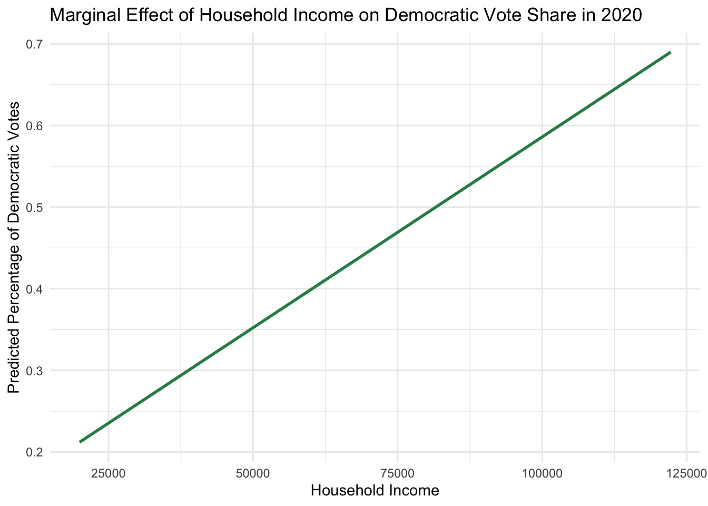

library(juanr)
data("elections")Bernhard_Week6
Week 6 Assignment
Tasks: make scatterplot with smoothing line, coefficient plot (pointrange), marginal effect plots, regression table with 3 models using modelsummary package
Loading Data
Plots
Scatterplot with smoothing line
Now that the proper dataset has been loaded, let’s visualize! We will begin by looking at the relationship of household income on Democratic vote share in the 2020 election.
library(ggplot2)
plot1 = ggplot(elections, aes(x = hh_income, y = per_dem_2020)) +
geom_point(aes(color = census_region), alpha = 0.6) +
geom_smooth(method = "loess", se = FALSE) +
labs(title = "Household Income vs. Democratic Vote Share in 2020",
x = "Household Income",
y = "Percentage of Democratic Votes") +
theme_minimal()
print(plot1)`geom_smooth()` using formula = 'y ~ x'Warning: Removed 41 rows containing non-finite values (`stat_smooth()`).Warning: Removed 41 rows containing missing values (`geom_point()`).Coefficient Plot
Next, we will create a coefficient plot.
# Fit the linear model
model <- lm(per_dem_2020 ~ female + white + hh_income, data = elections)
# Extract coefficients and confidence intervals
model_summary <- summary(model)
coefficients <- model_summary$coefficients
confint_model <- confint(model)
# Combine the coefficients with the confidence intervals
coefficients_df <- as.data.frame(coefficients)
coefficients_df <- cbind(coefficients_df, confint_model)
# Make the row names (variable names) a column
coefficients_df$variable <- rownames(coefficients_df)
# Create the coefficient plot
ggplot(coefficients_df, aes(x=variable, y=Estimate)) +
geom_point() +
geom_errorbar(aes(ymin=`2.5 %`, ymax=`97.5 %`), width=.2) +
xlab('Variables') +
ylab('Estimated Coefficients') +
ggtitle('Pointwise Coefficients Plot') +
theme_minimal()Marginal Effects Plot
# New dataframe for predictions where 'female' and 'white' are held at their means
predict_data <- data.frame(
hh_income = seq(min(elections$hh_income, na.rm = TRUE),
max(elections$hh_income, na.rm = TRUE), length.out = 100),
female = mean(elections$female, na.rm = TRUE),
white = mean(elections$white, na.rm = TRUE)
)
# Generate predictions using the model coefficients
predict_data$predicted_dem_2020 <- predict(model, newdata = predict_data)
# Create the marginal effects plot with ggplot2
ggplot(predict_data, aes(x = hh_income, y = predicted_dem_2020)) +
geom_line(color = 'seagreen', size = 1) +
labs(title = 'Marginal Effect of Household Income on Democratic Vote Share in 2020',
x = 'Household Income',
y = 'Predicted Percentage of Democratic Votes') +
theme_minimal()Warning: Using `size` aesthetic for lines was deprecated in ggplot2 3.4.0.
ℹ Please use `linewidth` instead.
Regression Tables
library(modelsummary)
# Fit three different linear models
model1 <- lm(per_dem_2020 ~ hh_income, data = elections)
model2 <- lm(per_dem_2020 ~ hh_income + female, data = elections)
model3 <- lm(per_dem_2020 ~ hh_income + female + white, data = elections)
# Use modelsummary to create the regression table
models <- list(model1, model2, model3)
modelsummary(models)| (1) | (2) | (3) | |
|---|---|---|---|
| (Intercept) | 0.181 | −0.489 | 0.205 |
| (0.011) | (0.063) | (0.052) | |
| hh_income | 0.000 | 0.000 | 0.000 |
| (0.000) | (0.000) | (0.000) | |
| female | 0.013 | 0.009 | |
| (0.001) | (0.001) | ||
| white | −0.006 | ||
| (0.000) | |||
| Num.Obs. | 3111 | 3111 | 3111 |
| R2 | 0.060 | 0.094 | 0.437 |
| R2 Adj. | 0.060 | 0.093 | 0.436 |
| AIC | −2780.0 | −2892.0 | −4368.0 |
| BIC | −2761.9 | −2867.8 | −4337.8 |
| Log.Lik. | 1393.013 | 1449.988 | 2189.014 |
| F | 199.095 | 161.203 | 802.650 |
| RMSE | 0.15 | 0.15 | 0.12 |